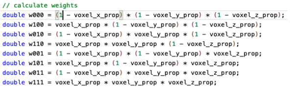

Our goal with the final project is to convert point cloud data into a triangle mesh using poisson surface reconstruction. We had several action items listed on our project proposal, but we chose to prioritize the poisson reconstruction algorithm first.
We obtained our skeleton framework from code provided by the University of Toronto (linked here) and used that as a starting point for our project.
First, we implemented the following helper functions:
After, we utilized these helper functions to define the poisson reconstruction algorithm:
|
|
|
The white dots represent points from the point cloud, and the red arrows represent the normals of each point.
|

|
|
So far, we have nearly accomplished the second half of our pipeline where we constructed an object’s mesh from a given set of point clouds. So far, we have yet to incorporate a NeRF model or any type of algorithm where you have a set of images and produce a set of point clouds. We thought that since we have nearly completed a simplified version of the Poisson Reconstruction algorithm and therefore nearly done 50%, we could perhaps either increase the complexity of our algorithm for optimization or extend for more features as discussed below.
Currently, we have written the bulk of our code for trilinear interpolation, deriving derivatives, and the poisson reconstruction algorithm. We aim to debug our code and fully complete our algorithm to generate the final mesh images. Next, we will compare the performance of our implementation with other (already-implemented) algorithms such as Ball-Pivot. If we have more time, we plan on utilizing NeRF technology to convert images into their point cloud representations. Additionally, we can also extend the Poisson Reconstruction algorithm to include adaptive grid or track the confidence of input data and its effect on smoothing values.